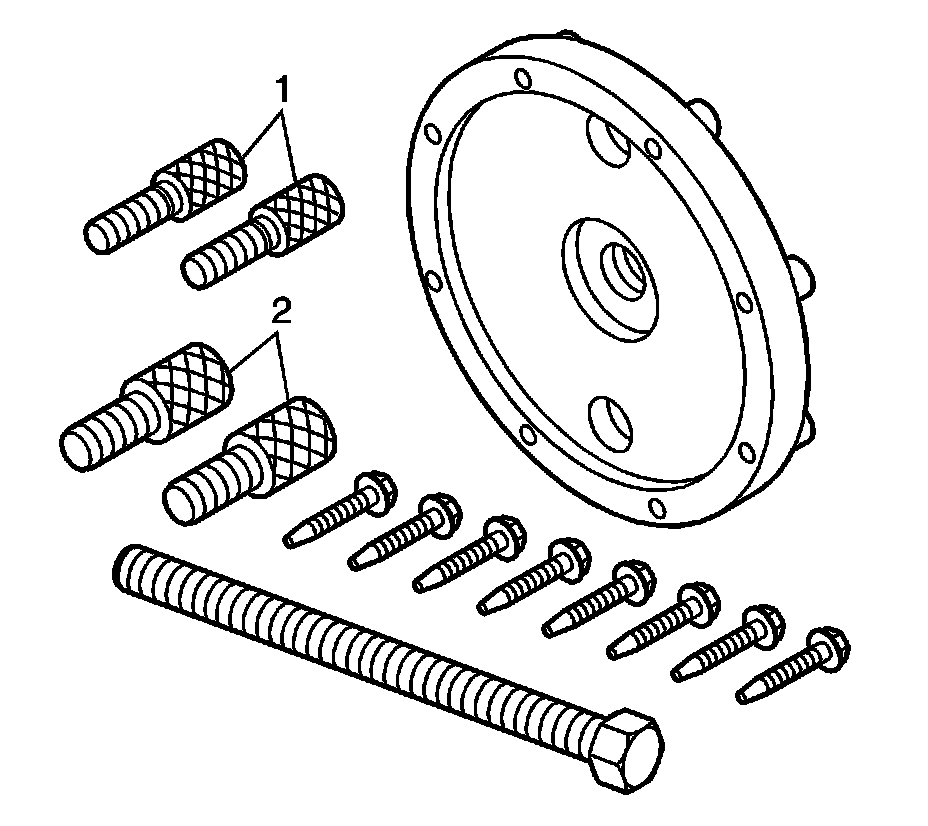
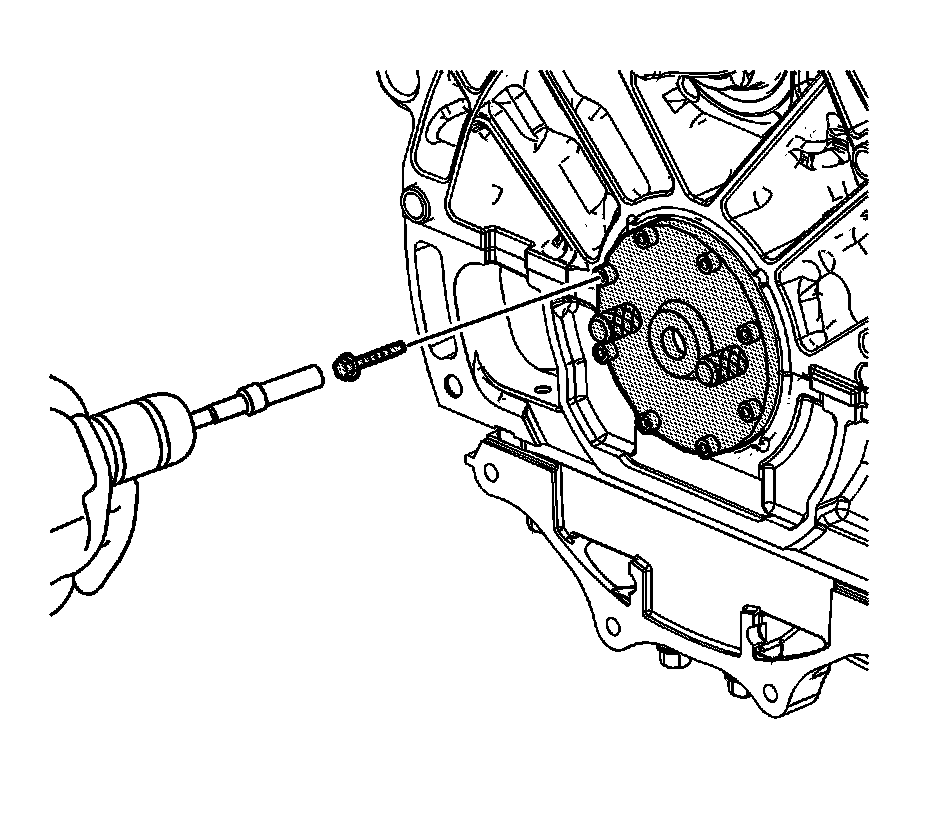
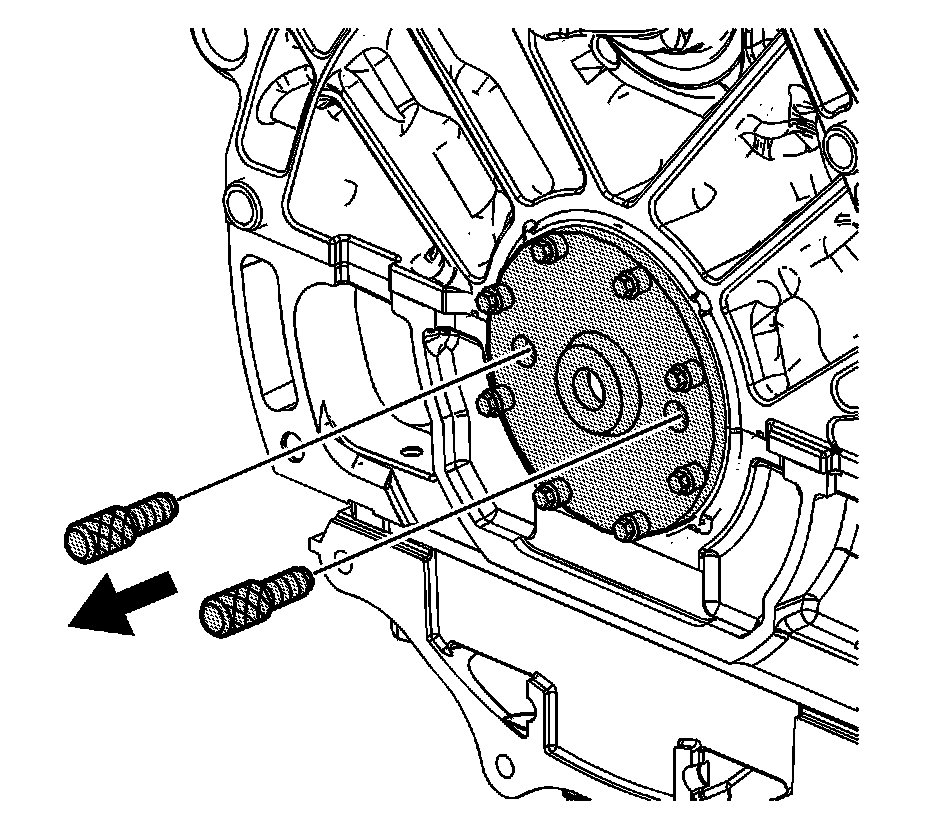
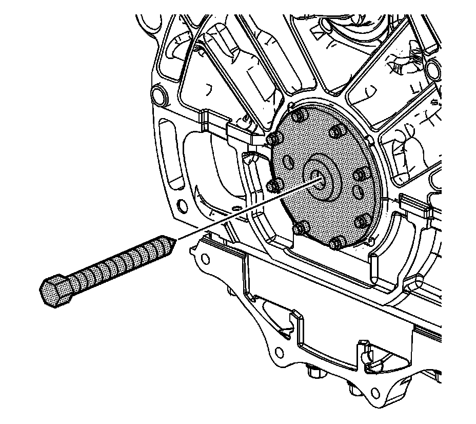
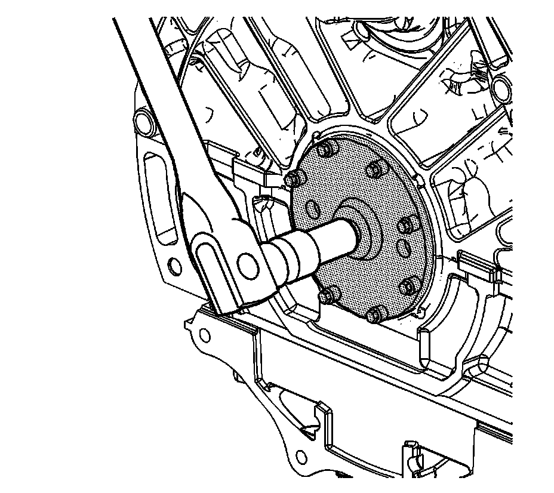
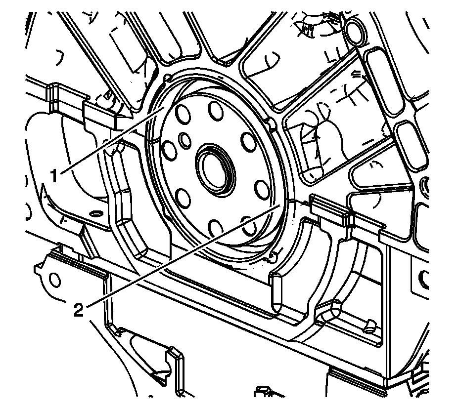

15. Crankshaft Rear Oil Seal Removal
Crankshaft Rear Oil Seal Removal
Tools Required
J 42841-A Rear Oil Seal Remover
Important: If the engine is in the vehicle, the crankshaft rear oil seal can be removed/installed after the transmission/transaxle and engine flywheel are removed.
Important: Crankshaft rear oil seal removal requires adequate space for removal. Mount the engine on a suitable engine stand which will properly space the engine in order to use the J 42841-A in order to remove the crankshaft rear oil seal. If necessary remove the crankshaft rear oil seal with the engine properly supported on the floor or on a bench.
Important: Beginning with the model year 2006 the flywheel/flexplate crankshaft bolt hole thread was changed from 8 x 1.25 mm to 11 x 1.5 mm. The J 42841-A will service the cassette seals installed on engines from March 1, 1996 and later. If the older J 42841 is to be used on a 2006 or later engine the update kit, J 42841-10, must be used to convert the J 42841 to a J 42841-A .

1. Install the J 42841-A plate onto the crankshaft. The hub on the crankshaft will fit into the recess on the inboard side of the J 42841-A plate.

Important: Northstar engines 2005 and older have an 8 x 1.25 mm flywheel/flexplate crankshaft bolt hole thread. Northstar engines 2006 and later have an 11 x 1.5 mm flywheel/flexplate crankshaft bolt hole thread.
2. Use the proper bolts from the J 42841-A to retain the plate in place. Use the bolts (1) 8 mm or the bolts (2) 11 mm.

3. Using a drill motor, variable speed preferred, with a socket adapter, install eight 25 mm (1.0 in) self-drilling screws into the seal using the guide holes in the removal tool. When drilling, ensure the drill motor speed is reduced when the screw begins threading into the seal.

4. With all eight removal screws installed, remove the J 42841-A retaining bolts.

5. Install the center forcing screw.

6. Tighten the center screw on the J 42841-A to pull the seal assembly off the end of the crankshaft.

7. After removing the crankshaft rear oil seal inspect the engine block bore (1) and the crankshaft flange (2) for the damage. Repair or replace any damaged components.